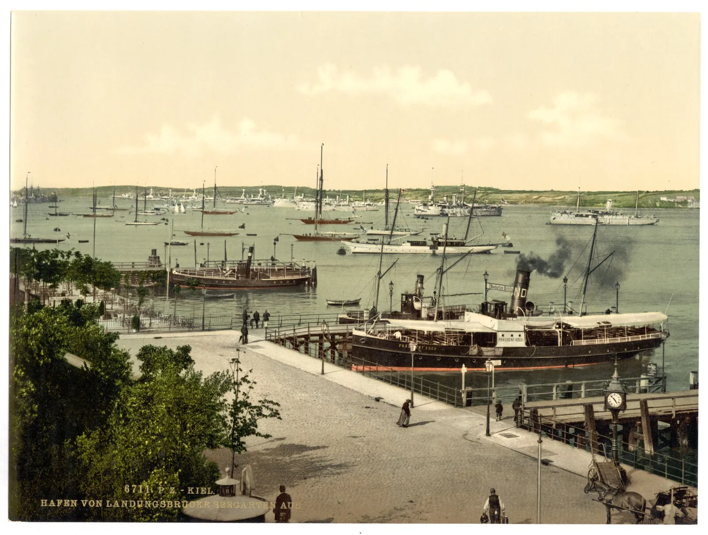
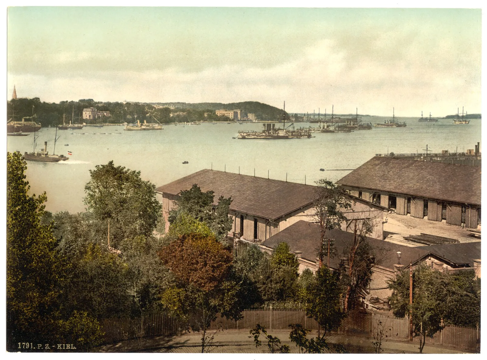
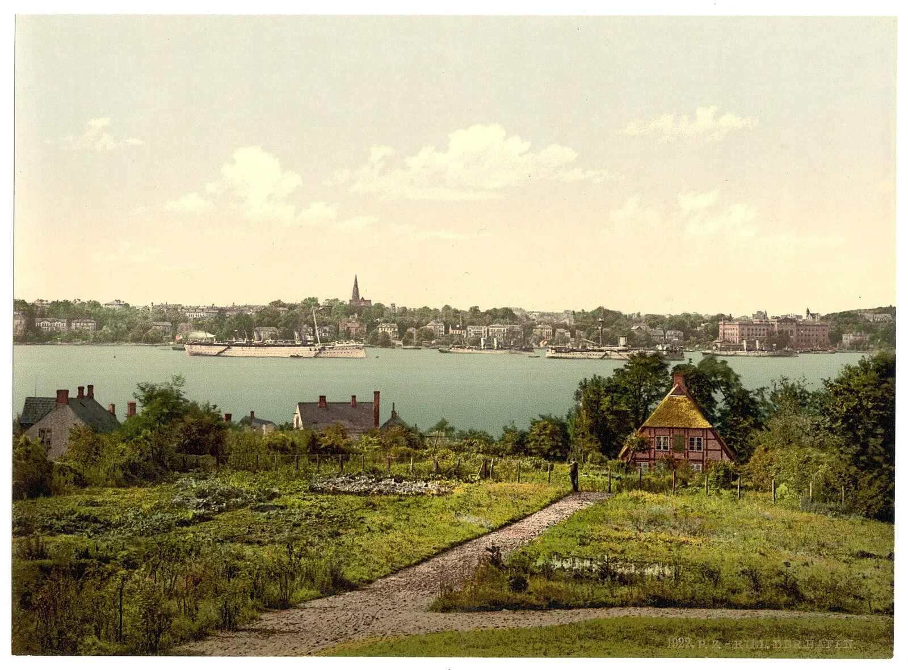
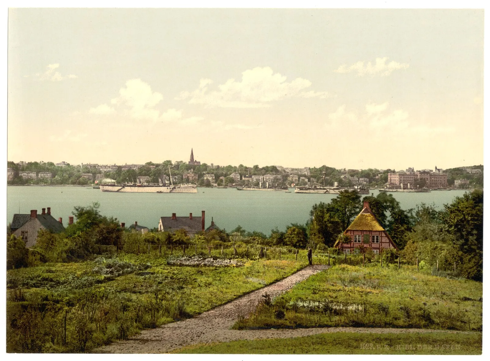
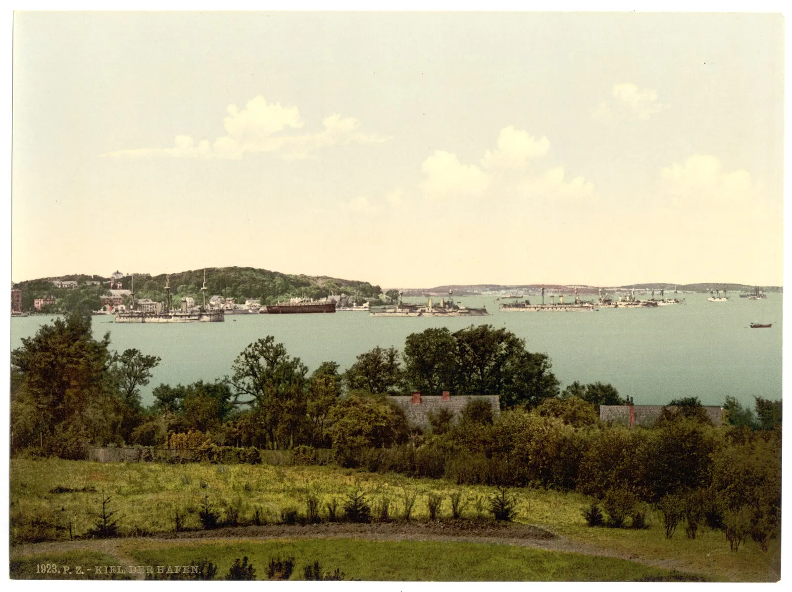
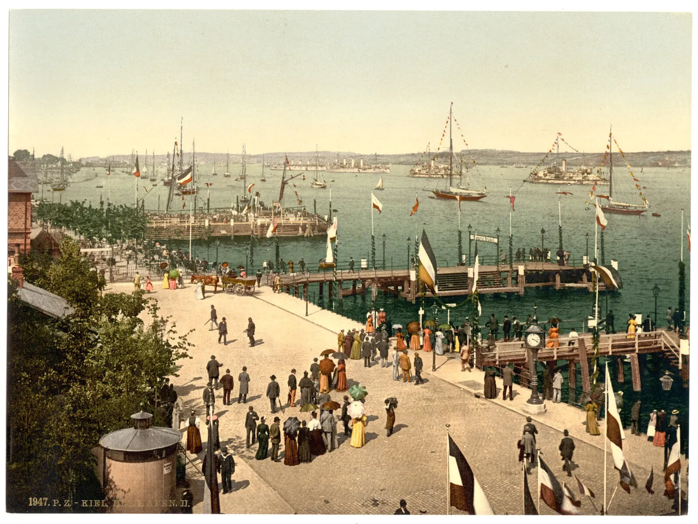

Kiel
Photo: Wikimedia Commons
Photo Gallery





Image Credits
All port images are sourced from Wikimedia Commons under Creative Commons licenses (CC BY-SA). Original photographers retain copyright. Used with gratitude and attribution.
Last reviewed: February 2026